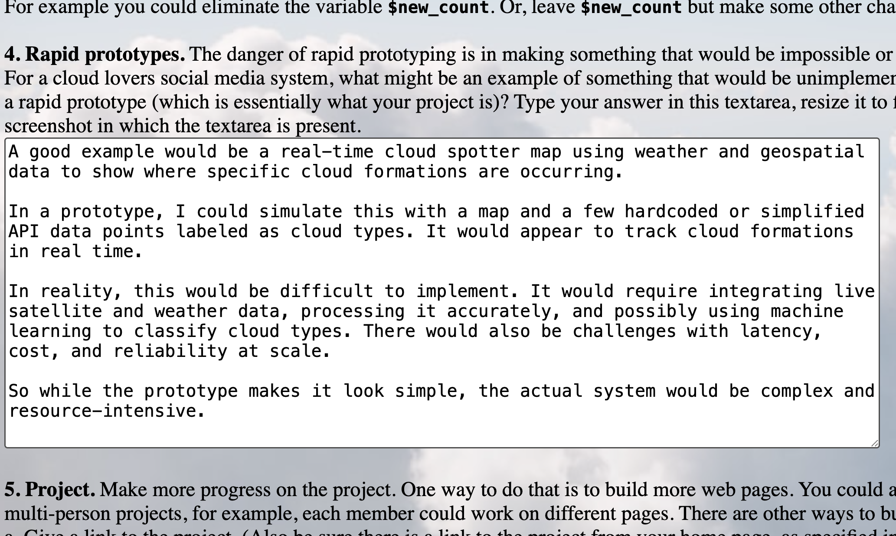

Module 12
Due: 4.21.2026
1. Project presentations. The last two class sessions for this class (2026: Tu April 28 & Th April 30) will be project presentations. Plan to present on Tu April 28. However some people will be called on to present on April 30 instead. Avoid requesting to delay your presentation to the later class session, because then it counts as late.
Final Project Link2. For three more PHP commands, add them to your demo page, demo them and provide the PHP code of each demo. In your answer to this question, give the link to the demo page, and also state which commands you added.
3. Add a web hit counter to your home page using PHP. Implement the actual PHP program that does the hit counting, rather than finding a free hit counter on the Web.
To learn more I ran the starter code through claude to audit each line and identify any security issues. I acutally learned a ton by doing this as it reniforced some security best practices I have been focusing on. As stated previously I am hosting these scirpts on a php freindly server and then embedding via an iframe. The unintended outcome of this is that due to the way iframes are cached the counter seems to only update on unique visitors rather than page reloads. The standalone script can be found here. It works as intendeed. Standalone
4. Rapid prototypes. The danger of rapid prototyping is in making something that would be impossible or unfeasible to implement look like easy. For a cloud lovers social media system, what might be an example of something that would be unimplementable but could be made to look easy in a rapid prototype (which is essentially what your project is)? Type your answer in this textarea, resize it to fit your answer, and submit a full-screen screenshot in which the textarea is present.

Make more progress on the project.
Final Project Link